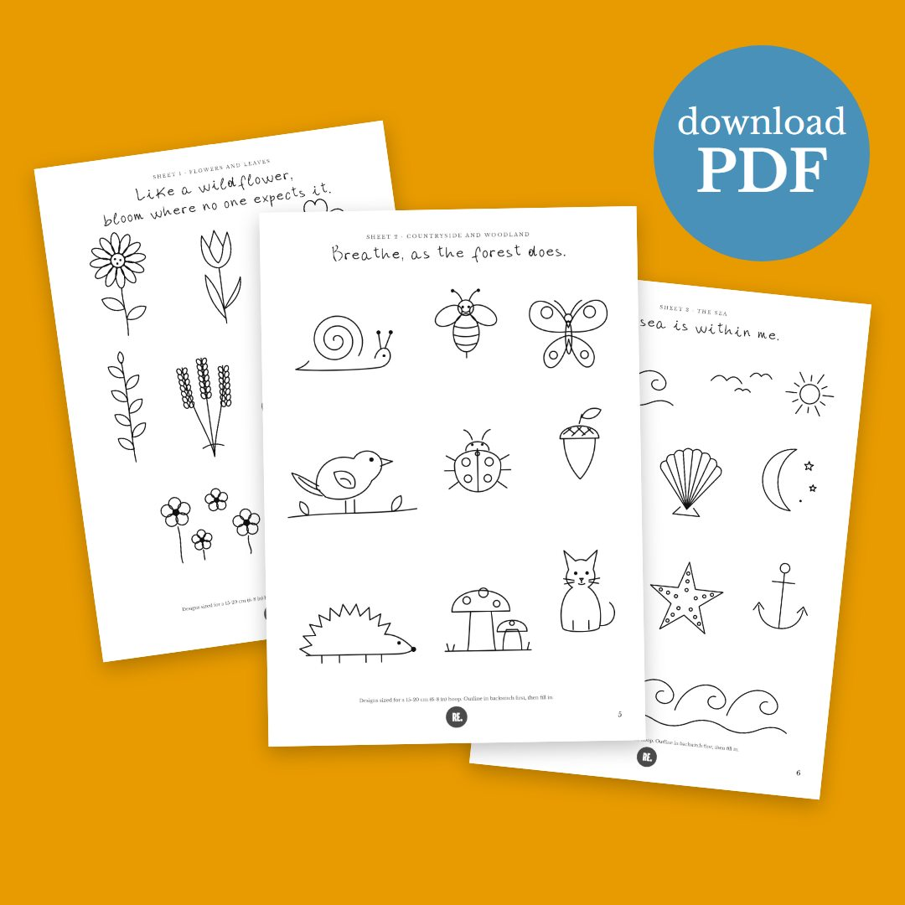
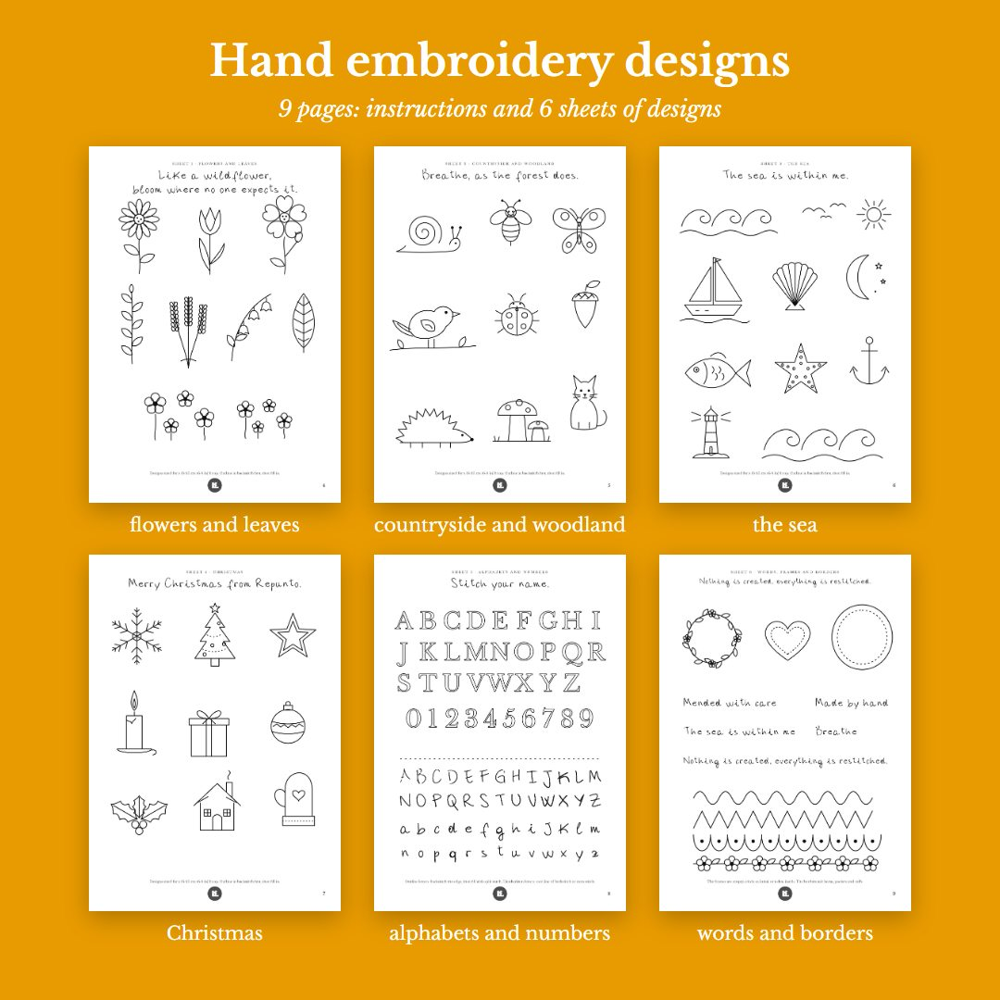

Hand embroidery designs, simple and ready to print
Flowers, countryside animals, the sea, Christmas, two alphabets, words and borders: clear-line designs to print at home and stitch on a pillowcase, a napkin or a cotton or linen shirt.
9-page PDF in English, A4 (also prints on US Letter) · download right after payment

Six sheets to embroider
- Flowers and leaves: daisy, tulip, lavender, bellflowers, a branch
- Countryside and woodland: snail, bee, butterfly, ladybird, bird, hedgehog, mushrooms, cat
- The sea: waves, sailing boat, shell, starfish, fish, anchor, lighthouse, moon
- Christmas: snowflake, tree, candle, gift, bauble, holly, little house, mitten
- Two alphabets and numbers, for a name or a date
- English phrases, frames and borders for hems, pockets and cuffs
The first three pages explain how to trace a design against the light or print it on water-soluble stabiliser, and how to stitch it, with photos.

Where to start with hand embroidery
A simple design has a few clear lines and no shading: you stitch all the outlines in one stitch and add details later. For a first piece, choose something small, like a leaf, a wave or a star, on smooth, light-coloured cotton.
Which stitches do I need?
Backstitch for outlines, stem or split stitch for filling, French knots for eyes and dots. The PDF explains them and links to my free video, which is in Italian but easy to follow by watching my hands.
Can I print on US Letter paper?
Yes. Choose "Fit to page": the designs come out about 6% smaller, which makes no difference for embroidery.
Are they cross stitch patterns?
No. These are line drawings for freehand embroidery. Cross stitch uses a grid chart.
Which currency will I pay in?
The price is €6. If your card uses another currency, your bank converts it and may charge a fee.
How do I receive the PDF?
After payment a page opens with the download button, and I email you the same link, valid for 30 days. If the email doesn't arrive, write to me.